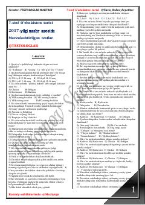

7O7-sinf O'zbekiston tarixi fanidan mavzulashtirilgan testlar to'plami.
Ushbu qo'llanma 7-sinf O'zbekiston tarixi fani bo'yicha mavzulashtirilgan test topshiriqlarini o'z ichiga oladi. Kitob o'quvchilarga tarixiy sanalar, shaxslar va jarayonlarni chuqur o'rganish hamda imtihonlarga tayyorgarlik ko'rishda yordam beradi.